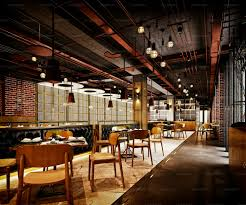
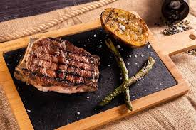
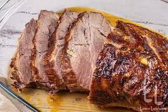
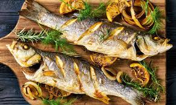

Despre mine
Fotografie:
Restaurantul meu este cel mai mare restaurant din România. Se numește tropical.
Are 35 mese a câte 8 scaune, unele cu câte 6 altele cu câte 4 altele cu câte 2 etc
Avem rețete din Germania și din China. Sushi le preparam cu carne de vita și pește afumat.
Mai avem eclere care facem cremă de casă nu cumpărată din comerț.
Prăjiturele sunt între 15-30 lei iar mâncarea între 10-80 lei
Avem un preparat special numit tropical. Ca numele restaurantului.

Sunt o persoană dedicată și pasionată de ceea ce fac, cu abilități excelente de comunicare și o atitudine pozitivă.
Gatitul
Gătitul – pe lângă că este esențial pentru nutriția de zi cu zi – poate fi o distracție creativă. Ne place să gătim pentru că ne place să experimentăm cu arome. Dar sunt cei cărora le place experiența succesului, dacă prin respecatrea rețetei vom avea rezultatul așteptat.
Cotlet Pret 59ron

Ceafa 59ron

Biban 70ron

Cum se gateste este foarte important!
Suntem o echipa bine organizata!!
Sub presiunea pandemiei de coronavirus, restaurantele s-au schimbat destul de mult în ultimii doi ani. Reimaginarea meniului este o provocare pentru mulți chefi și manageri. De fapt, meniul s-a schimbat chiar și la modul fizic. Astăzi întâlnim tot mai multe restaurante care prezintă meniurile sub forma QR codurilor. Dacă unii dintre vechii tăi clienți nu sunt încântați de această formulă, optează pentru meniu în formă fizică alături de cel digital. Însă, nu uita că preocuparea pentru alimentația sănătoasă este încă mai puternică anul acesta decât anul trecut. Dotează-ți bucătăria cu roboți profesionali pentru tăierea legumelor și încearcă noi rețete creative de preparate sănătoase, pe bază de vegetale, care vor fi la putere anul acesta!
Ce gatim azi? Idei de mancare pentru fiecare zi
În fiecare vineri, publicăm idei de mâncare pentru săptămâna următoare cu noi variante de rețete ca să-ți fie mai simplu să decizi ce să gătești în fiecare zi și să-ți pregătești din timp lista de cumpărături cu ce îți lipsește din cămară sau frigider. Dacă propunerile actuale de idei de mâncare nu sunt toate pe placul tău, poți descoperi mai jos o serie de alte zeci de rețete.
Inspiră-te, joacă-te cu ingredientele, fii creativ la tine în bucătărie și surprinde-i pe cei dragi cu preparate noi și gustoase de fiecare dată.
Echipa este ce a mai importanta
Team it;s the power!!
Organizarea unui restaurant din punct de vedere al personalului variază destul de tare, în funcție de nevoile și dimensiunea afacerii. Nu există o teorie general valabilă sau o rețetă a succesului, însă atunci când ai alături o echipă bine formată, cu siguranță vei fi mai aproape de reușită. Orice afacere din horeca ar trebui să pună mare accent pe echipă, care ar trebui formată dintr-un personal calificat, care să exceleze atât pe partea de conturare a experiențelor culinare, cât și pe partea de servire.

Despre noi ..
„Nu știu dacă suntem cel mai bun restaurant din lume, dar știu că suntem cea mai bună echipă din această nenorocită de galaxie. În timpul pandemiei, chiar și în cele mai grele momente, m-am simțit în siguranță datorită tuturor”
Suntem atenți la preferințele clienților și asigurăm o varietate mare de produse în meniu”„Un aspect important ce contribuie la retenția angajaților în companie este promovarea din interior. Oferim training-uri și programe speciale de creștere. Astfel încât pozițiile manageriale din restaurante sunt atribuite angajaților care au evoluat în companie. În plus, sprijinim și încurajăm performanța școlară acordând burse angajaților studenți cu rezultate deosebite pe plan profesional și academic. Anul trecut, valoarea totală a acestor burse a fost de 300.000 de lei net”, a precizat directorul general al companiei.